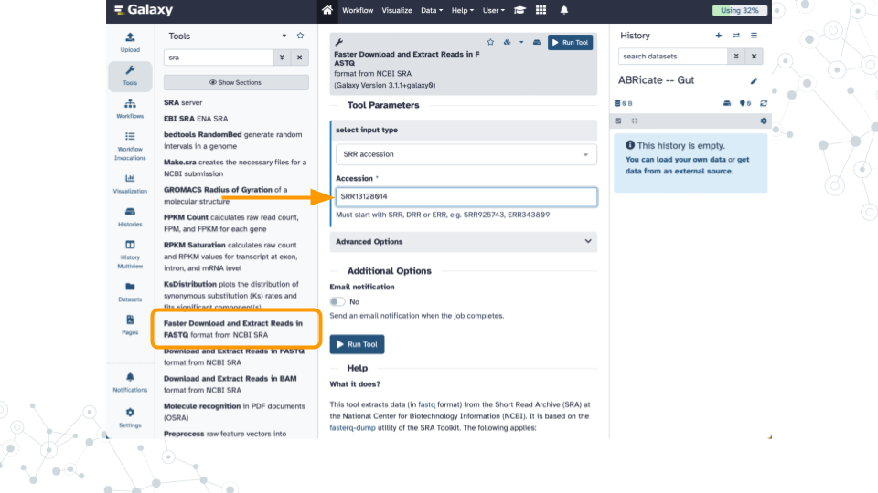
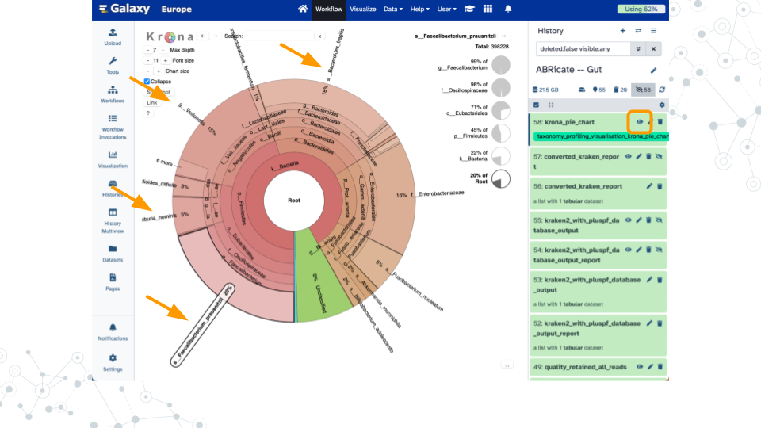
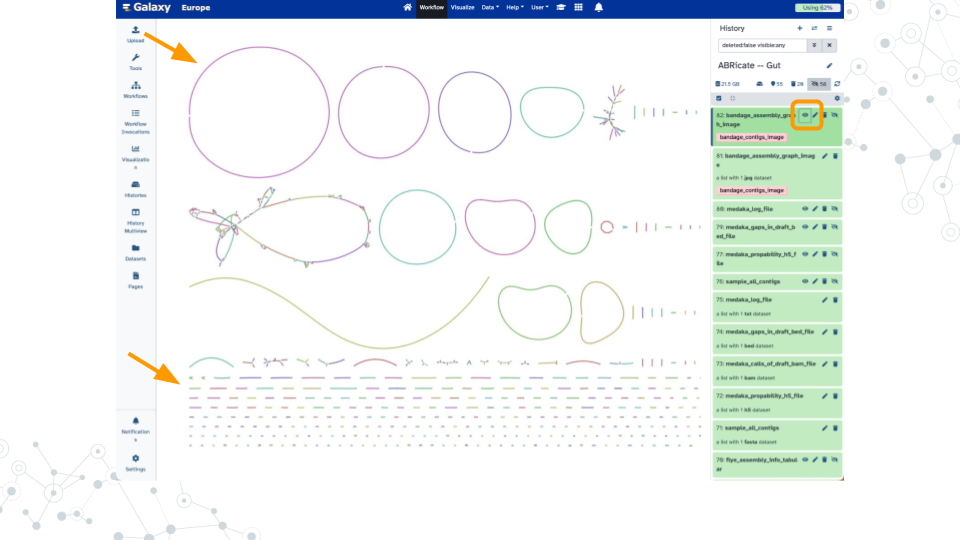
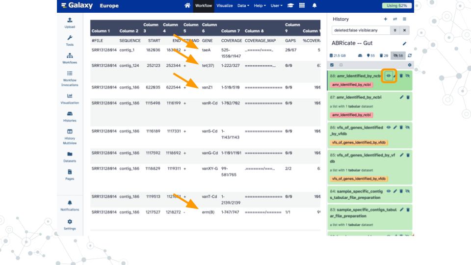

Chapter 7 Kickstart Project Work
Overview
Introduction
In this lab we will kickstart your project work by analyzing one of the first BioDIGS long-read datasets from Baltimore soil sequenced using PacBio HiFi technology. Afterwards, you will be ready to analyze additional publicly available datasets and compare the results with other datasets of interest (e.g. managed vs wetland soil, corn soy vs cowpea diet).
| Title | Technology | Source |
|---|---|---|
| BioDIGS Pilot | PacBio | Galaxy History |
| Wetland | Nanopore | PRJNA1119519 (e.g. SRR29366187) |
| Habitats | Nanopore | PRJNA1112790 (e.g. SRR29081438) |
| Zymo Gut Standard | PacBio | Galaxy History (e.g. SRR13128014) |
| Zymo Fecal Reference | PacBio | Galaxy History |
| Diet | PacBio & Nanopore | PRJNA1139951 (e.g. SRR29980925) |
Activity 1 – Get Data
The BioDIGS PacBio pilot dataset is available as a Galaxy History.
You can quickly import this dataset and any other dataset available as a Galaxy History by clicking on the link in the table above, clicking on Import this history, and then Copy History as you did in Taxonomy Profiling.
Additional datasets can be obtained from the NCBI Sequence Read Archive which is the “largest publicly available repository of high throughput sequencing data”.
After identifying an SRR number (see examples in the table above) you can import the dataset using the Galaxy tool named Faster Download and Extract Reads in FASTQ.
Faster Download and Extract Reads in FASTQ will add three Collections to your history (Pair end, Single end, and Other).
You can simplify this so that your dataset of interest appears as a new history entry by using the Extract dataset tool and selecting The first dataset from the Single-end data Collection.
Learn more about Collections in Troubleshooting
Shown here is an example of importing SRR13128014 which is a PacBio HiFi dataset of the ZymoBIOMICS Gut Microbiome Standard that contains “21 different strains to mimic the human gut microbiome”.

Activity 2 – Adjust for PacBio HiFi
PacBio HiFi technology provides “highly accurate long-read sequencing”. The higher accuracy (99.9% on par with short reads and Sanger sequencing) allows for some simplification of the workflows in Taxonomy Profiling and Finding AMRs which were developed for Oxford Nanopore technology. These adjustments include:
- Skip the
Trim and QC Readsworkflow asPorechopadapter removal andfastqpquality trimming may be unnecessary/incorrect - Run the
NanoPlottool directly to calculate summary statistics - Run
ABRicatedirectly onflye_consensus_fastarather than onsample_all_contigs(produced bymedakawhich is designed to polish nanopore sequencing data)
Datasets close to and larger than 10 GB require increasingly more computational resources to analyze.
In addition to taking longer to process, some tools such as flye may fail with errors such as ERROR: Looks like the system ran out of memory.
For these situations, try using the Split file tool to create smaller subsets of data to analyze.
See note above about extracting a dataset from a Collection.
Shown here are example results when analyzing a 10% subset of SRR13128014 for taxonomy profiling (92% reads classified), genome assembly (181 contigs up to 5.1 Mb), and antimicrobial resistance genes (14 hits including multiple tetracycline, vancomycin, and beta-lactam).



Activity 3 – Summarize Results
Create a report that summarizes your analysis for each dataset that describes:
- Description – Short title such as “wetland 1.2m depth” or “cowpea diet, age 25.56 months”
- Dataset – Source such as SRA accession code (
SRR) and BioProject number (PRJN) or URL - Sequencing – Technology, number of reads, number of bases, median read length, mean read length
- Taxonomy – Major classifications and amounts, percentage unclassified
- Assembles – Number of contigs, top five lengths
- AMRs – Resistance classes, which contigs contain hits
Additional analyses to consider
- Use ABRicate to screen additional databases such as CARD and VFDB
- Use NCBI BLAST to compare contigs to known genomes
- Use antiSMASH to annotate secondary metabolite biosynthesis gene clusters